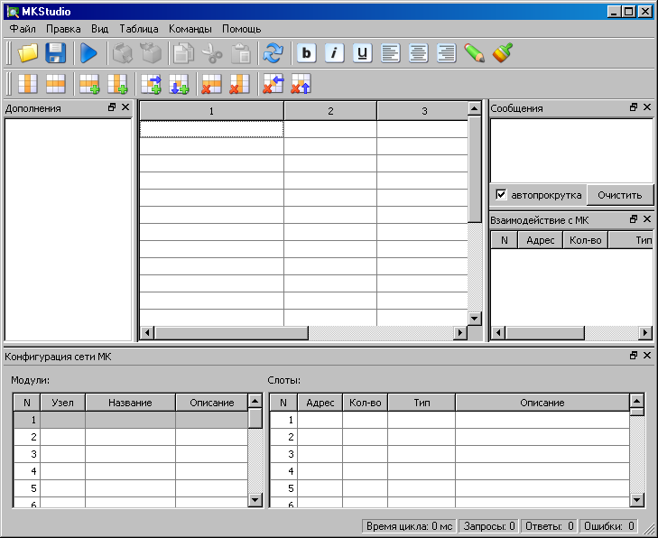
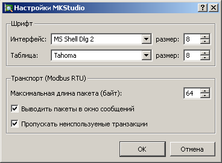

После запуска программы MKStudio появляется окно начального диалога:
Здесь необходимо задать параметры интерфейса для взаимодействия с сетью МК.
| Параметр | Описание |
|---|---|
| Имя последовательного порта или Modbus TCP для работы по TCP/IP. | |
| Скорость передачи данных последовательного порта или имя сервера для Modbus TCP. | |
| Значение тайм-аута ответа (в мс). | |
| Максимальная длина пакета в байтах, допустимая в данной сети МК. | |
| Ожидание между запросами | Время (в мс) между получением ответа и посылкой следующего запроса. |
| Цикл опроса | Минимальное время (в мс) полного цикла опроса. |
Подробности про организацию сети МК см. здесь.

Главное окно программы MKStudio содержит:
Меню
| Пункт меню | Описание |
|---|---|
| Создает новый проект | |
| Загружает проект из файла проекта. | |
| Сохраняет текущий проект в файл проекта. | |
| Сохраняет текущий проект в файл проекта с указанным именем. | |
| Экспорт конфигурации | Экспортирует текущую конфигурацию в текстовый файл. |
| Сохраняет текущие значения параметров информационной базы МК в файл. (Доступен только при работе информационного обмена с МК) | |
| Загружает сохраненные в файле значения параметров информационной базы и записывает их в МК. (Доступен только при работе информационного обмена с МК) |
Меню
| Пункт меню | Описание |
|---|---|
| Отменяет последнее действие при редактировании таблицы. Возможна отмена нескольких действий подряд. | |
| Восстанавливает последнее отмененное действие. | |
| Копирует содержимое выделенной области ячеек таблицы во внутренний буфер. | |
| Копирует содержимое выделенной области ячеек таблицы во внутренний буфер, а затем очищает ячейки. | |
| Вставляет ячейки из временного буфера в таблицу в позицию текущей ячейки. |
Меню
| Пункт меню | Описание |
|---|---|
| Вызывает окно настройки программы. | |
| Отображает/скрывает прикрепленное окно . | |
| Отображает/скрывает прикрепленное окно . | |
| Отображает/скрывает прикрепленное окно . | |
| Отображает/скрывает прикрепленное окно . | |
| Отображает/скрывает главную панель инструментов. | |
| Отображает/скрывает панель инструментов вставки и удаления ячеек таблицы. |
Меню
| Пункт меню | Описание |
|---|---|
| > |
Задает количество строк в таблице. |
| > |
Задает количество столбцов в таблице. |
| > |
Вставляет строку в позицию текущей ячейки. |
| > | Вставляет столбец в позицию текущей ячейки. |
| > | Вставляет новую ячейку в позицию текущей ячейки. При этом действии значения всех ячейках текущей строки, находящиеся правее позиции вставки, сдвигаются направо на одну позицию. |
| > | Вставляет новую ячейку в позицию текущей ячейки. При этом действии значения во всех ячейках текущего столбца, находящиеся ниже позиции вставки, сдвигаются вниз на одну позицию. |
| > | Удаляет строку в позиции текущей ячейки. |
| > | Вставляет строку в позиции текущей ячейки. |
| > | Удаляет текущую ячейку. При этом действии значения всех ячеек текущей строки, находящиеся правее места удаления, сдвигаются влево на одну позицию. |
| > | Удаляет текущую ячейку. При этом действии значения всех ячеек текущего столбца, находящиеся ниже места удаления, сдвигаются вверх на одну позицию. |
| Включает/отключает полужирное начертание шрифта для выделенных ячеек. | |
| Включает/отключает наклонное начертание шрифта для выделенных ячеек. | |
| Включает/отключает подчеркивание текста для выделенных ячеек. | |
| Задает выравнивание текста к левому краю для выделенных ячеек. | |
| Задает выравнивание текста по центру краю для выделенных ячеек. | |
| Задает выравнивание текста к правому краю для выделенных ячеек. | |
| Задает цвет текста для выделенных ячеек. | |
| Задает цвет фона для выделенных ячеек. | |
| Задает привязку для выделенных ячеек. |
Меню
| Пункт меню | Описание |
|---|---|
| Запускает информационный обмен между MKStudio и сетью МК. Программа переходит в режим работы с проектом. | |
| Останавливает информационный обмен между MKStudio и сетью МК. Программа переходит в режим редактирования проекта. |
Меню
| Пункт меню | Описание |
|---|---|
| Вызывает данное руководство пользователя. | |
| Показывает информацию о программе. |
Прикрепляемые окна - это дочерние окна главного окна программы, которые могут быть:
Управление положением прикрепляемого окна производится перетаскиванием его заголовка. Для этого надо подвести указатель мыши к заголовку окна, нажать левую клавишу мыши, и, удерживая ее, перемещать окно на требуемую позицию. При совпадении заголовком двух окон они объединяются, их дальнейший выбор осуществляется по закладкам. Скрывать и показывать прикрепляемые окна можно из меню .
В это окно программа выводит различные сообщения:
Нажатие кнопки удаляет все сообщения. При установленном флажке окно всегда показывает последние сообщения.
В режиме настройки проекта это окно пусто. После запуска проекта в этом окне отображается состояние информационного обмена с МК.
Поля таблицы повторяют поля из окна . Цвет поля для данного слота обозначает:
При двойном нажатии кнопки мыши на строчке таблицы вызывается окно со значениями параметров слота. Подробности здесь.
В этом окне задается конфигурация сети МК данного проекта. Подробности здесь.
В этом окне задаются дополнительные настройки отображения ячеек таблицы. Подробности здесь.
В стороке состяния выводятся следующие данные:
| Название поля | Описание |
|---|---|
| Время цикла | Время полного цикла информационного обмена с сетью МК в миллисекундах . Данное время показывает максимальное время, прошедшее между изменением значения параметра в информационной базе МК и его отображением в программе MKStudio. |
| Запросы | Счетчик пакетов запроса к МК по протоколу MODBUS-RTU MIKKON. Увеличение этого счетчика показывает, что MKStudio обращается к МК. |
| Ответы | Счетчик пакетов ответа МК по протоколу MODBUS-RTU MIKKON. Увеличение этого счетчика показывает, что MKStudio получает правильные ответы от MK. |
| Ошибки | Счетчик ошибок протокола MODBUS-RTU MIKKON. Увеличение этого счетчика показывает, что при обмене информацией между MKStudio и сетью MK возникают ошибки. |
Окно настройки программы вызывается через меню > .

В группе задаются используемые шрифты
отдельно для таблицы и всего остального интерфейса.
Флажок позволяет выводить в окно Сообщений все пакеты информационного обмена с МК. задает максимальный размер пакетов протокола. Эта настройка вступает в силу после запуска (перезапуска) проекта. включает режим, при котором пропускаются тракзакции, предназанченные для опроса параметров, не отображаемых на экране в данный момент.